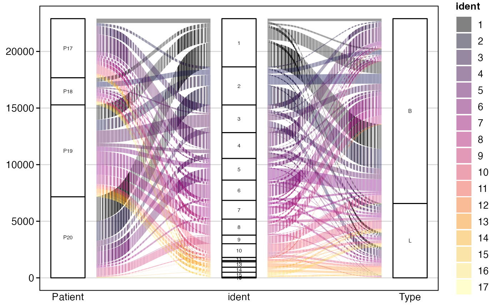

Visualizations for Single-Cell Objects
Compiled: November 04, 2024
Source:vignettes/articles/SC_Visualizations.Rmd
SC_Visualizations.RmdclonalOverlay
Using the dimensional reduction graphs as a reference, we can also
generate an overlay of the position of clonally-expanded cells using
clonalOverlay().
reduction
- The dimensional reduction for the visualization, (default = “pca”)
cut.category
- Use of “clonalFrequency” or “clonalProportion” to filter the overlay
cutpoint
- lowest clonal frequency or proportion to generate the contour plot
bins
- the number of contours to draw
clonalOverlay() can be used to look across all cells or
faceted by a meta data variable using facet.by. The
overall dimensional reduction will be maintained as we facet, while the
contour plots will adjust based on the facet.by
variable. The coloring of the dot plot is based on the active identity
of the single-cell object.
This visualization was authored by Dr. Francesco Mazziotta and inspired by Drs. Carmona and Andreatta and their work with ProjectTIL, which is a great pipeline to annotated T cell subtypes.
clonalOverlay(scRep_example,
reduction = "umap",
cutpoint = 1,
bins = 10,
facet.by = "Patient") +
guides(color = "none")
clonalNetwork
Similar to clonalOverlay(), we can look at the network
interaction of clones shared between clusters along the single-cell
dimensional reduction using clonalNetwork(). This function
shows the relative proportion of clones from the starting node, with the
ending node indicated by the arrow.
Filtering for clones can be accomplished using 3 methods:
filter.clones
- Select a number to isolate the clones comprising the top n number of
cells (e.g., filter.clones = 2000)
- Select “min” to make sure all groups are scaled to the size of the minimum group
filter.identity
- For the identity chosen to visualize, show the to and from network connections for a single group
filter.proportion
- Remove clones that comprise less than a certain proportion of clones in groups.
filter.graph
- Remove the reciprocal edges from the half of the graph, allowing for cleaner visualization.
#ggraph needs to be loaded due to issues with ggplot
library(ggraph)
#No Identity filter
clonalNetwork(scRep_example,
reduction = "umap",
group.by = "seurat_clusters",
filter.clones = NULL,
filter.identity = NULL,
cloneCall = "aa")We can look at the clonal relationships relative to a single cluster using the filter.identity parameter.
#Examining Cluster 3 only
clonalNetwork(scRep_example,
reduction = "umap",
group.by = "seurat_clusters",
filter.identity = 3,
cloneCall = "aa")We can also use exportClones parameter to quickly get clones that are shared across multiple identity groups, along with the total number of clones in the data set.
shared.clones <- clonalNetwork(scRep_example,
reduction = "umap",
group.by = "seurat_clusters",
cloneCall = "aa",
exportClones = TRUE)
head(shared.clones)## # A tibble: 6 × 2
## clone sum
## <chr> <int>
## 1 CVVSDNTGGFKTIF_CASSVRRERANTGELFF 906
## 2 CAERGSGGSYIPTF_CASSDPSGRQGPRWDTQYF 140
## 3 CAVTFHYNTDKLIF_CASSQDRTGLDYEQYF 122
## 4 CAVRDDGNTGFQKLVF_CASSQDFNDGGLNIQYF 119
## 5 CARKVRDSSYKLIF_CASSDSGYNEQFF 106
## 6 CAVGAQQGGKLIF_CASSLSLSDGRHGYTF 101highlightClones
We can also look at the clones by calling specific sequences in the
highlightclones() below. In order to highlight the clones,
we first need to use the cloneCall, the type of
sequence we will be using, and then the specific sequences themselves
using sequence. Below, we can see the steps to
highlight the most prominent sequences
CAERGSGGSYIPTF_CASSDPSGRQGPRWDTQYF, and
CARKVRDSSYKLIF_CASSDSGYNEQFF.
scRep_example <- highlightClones(scRep_example,
cloneCall= "aa",
sequence = c("CAERGSGGSYIPTF_CASSDPSGRQGPRWDTQYF",
"CARKVRDSSYKLIF_CASSDSGYNEQFF"))
Seurat::DimPlot(scRep_example, group.by = "highlight") +
ggplot2::theme(plot.title = element_blank())
clonalOccupy
We can also look at the count of cells by cluster assigned into
specific frequency ranges by using the clonalOccupy()
function and selecting the x.axis to display cluster or
other variables in the meta data of the single cell object.
proportion
- can be used to look at relative level groupings
label
- will still return the absolute number of clones
clonalOccupy(scRep_example,
x.axis = "seurat_clusters")
clonalOccupy(scRep_example,
x.axis = "ident",
proportion = TRUE,
label = FALSE)
alluvialClones
After the metadata has been modified, we can look at clones across
multiple categories using the alluvialClones() function. We
are able to use the plots to examine the interchange of categorical
variables. Because this function will produce a graph with each clone
arranged by called stratification, this will take some time depending on
the size of the repertoire.
To understand the basic concepts of this graphing method and the ggalluvial R package, we recommend reading this post.
alluvialClones(scRep_example,
cloneCall = "aa",
y.axes = c("Patient", "ident", "Type"),
color = c("CVVSDNTGGFKTIF_CASSVRRERANTGELFF", "NA_CASSVRRERANTGELFF")) +
scale_fill_manual(values = c("grey", colorblind_vector[3]))
alluvialClones(scRep_example,
cloneCall = "gene",
y.axes = c("Patient", "ident", "Type"),
color = "ident") 
getCirclize
Like alluvial graphs, we can also visualize the interconnection of clusters using the chord diagrams from the circlize R package.
The first step is getting the data frame output to feed into the
chordDiagram() function in circlize, which can be done
using getCirclize().
This will calculate the relative number of clones shared based on the
group.by variable using the product of
combineExpression(). It is important to note
getCirclize() will create a matrix the size of the
group.by variable and then simplify into instructions
to be read by the circlize R package. The output is the total number of
unique and shared clones by the group.by variable.
library(circlize)
library(scales)
circles <- getCirclize(scRep_example,
group.by = "seurat_clusters")
#Just assigning the normal colors to each cluster
grid.cols <- hue_pal()(length(unique(scRep_example$seurat_clusters)))
names(grid.cols) <- unique(scRep_example$seurat_clusters)
#Graphing the chord diagram
chordDiagram(circles, self.link = 1, grid.col = grid.cols)
This can also be used if we want to explore just the lung-specific T cells by just subsetting the single-cell object. For the sake of this vignette, we can also look at setting proportion = TRUE to get a scaled output.
subset <- subset(scRep_example, Type == "L")
circles <- getCirclize(subset, group.by = "ident", proportion = TRUE)
grid.cols <- (scales::hue_pal())(length(unique(subset@active.ident)))
names(grid.cols) <- levels(subset@active.ident)
chordDiagram(circles, self.link = 1, grid.col = grid.cols, directional = 1, direction.type = "arrows",
link.arr.type = "big.arrow")